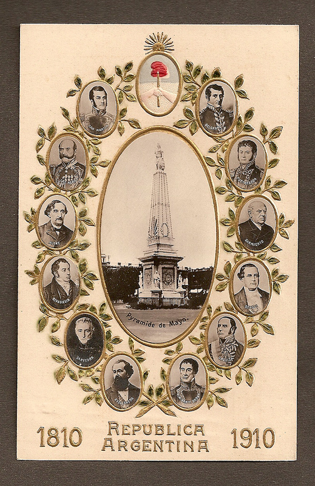
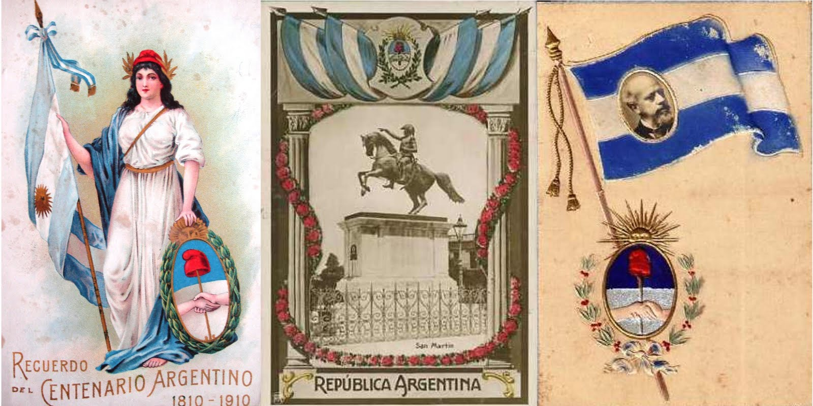

“En 1910, en el Centenario de la Revolución de Mayo, un grupo de hombres de la élite argentina creó una organización secreta con el objetivo de defender a la Patria. Durante los últimos cien años, esa organización operó exitosamente de manera clandestina a lo largo de todo el país, promoviendo la libertad, la justicia y la soberanía. Ahora esa organización decidió darte una oportunidad. Queremos que seas parte de La Logia”
Conocé a Joaquín
Joaquín, también conocido como Jotajota, es un joven estudiante que no sabe qué hacer con su vida. Desde que dejó la secundaria viene saltando de carrera sin encontrarse en ninguna, ni tener una sola pista de hacia dónde debería ir. Para Joaquín, él no es más que un muchacho común y corriente, que no tiene nada valioso que aportar al mundo. Pero todo eso está a punto de cambiar. A causa de una horrible tragedia, Joaquín, Jotajota, va a descubrir su verdadero potencial y tendrá que decidir si acepta ingresar a La Logia.
“...De las cenizas del pasado, ese hombre trajo de vuelta la ilusión de una organización posible. Una nueva orden, con los mismos valores pero con nuevos métodos. Con las mismas nobles aspiraciones pero más conscientes, más maduras. Despojadas de los vicios que otras épocas le supieron imprimir. Ese hombre nos guió, nos devolvió nuestro objetivo, nos puso en marcha otra vez. Pasé los últimos tres años buscando al equipo que ves atrás mío. Los entrené, los formé, les mostré su verdadero potencial. Ellos son ahora el germen de la nueva Logia. Todavía falta mucho por hacer. Todavía somos apenas una sombra de lo que fuimos. Pero hay voluntad en ellos. Hay un ansia de grandeza. Son los mismos valores que vi en vos, Joaquín. Y por eso quiero que formes parte de esto”.
La verdad está ahí afuera
La Logia es la historia de una organización secreta que, desde hace más de un siglo, viene dándole forma al país y que de repente, en su hora más oscura, debe reinventarse para poder hacerle frente a una conspiración que planea destruir la Patria. Acompañá a Joaquín, un estudiante veintiañero que anda perdido por la vida, mientras descubre quién es en realidad y conoce a las personas más extraordinarias que nuestro país tiene para ofrecer, hasta convertirse en parte del equipo que tiene en sus manos el futuro de toda una Nación.
Cuidado: escritor trabajando
Sé lo que estás pensando: esta historia me encanta, quiero leerla, no aguanto más, damelá. O quizás no. Sea cual sea la respuesta, lo cierto es que el folletín de este proyecto está en camino y va a llegar al público en los primeros meses del 2017. Hay que estar atento a las próximas novedades del asunto y, por supuesto, voy a ir soltando más información en los meses por venir.